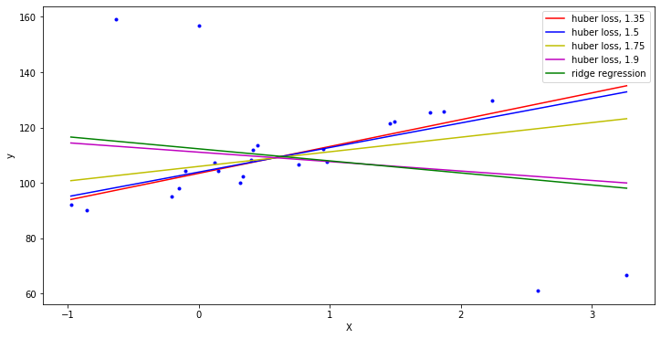

Regresión con outliers¶
15 min | Ultima modificación: Junio 22, 2019
[1]:
import pandas as pd
import numpy as np
import seaborn as sns
import matplotlib.pyplot as plt
import altair as alt
%matplotlib inline
%load_ext rpy2.ipython
[2]:
from sklearn.datasets import make_regression
from sklearn.linear_model import HuberRegressor, Ridge
plt.figure(figsize=(12, 6))
# Generate toy data.
rng = np.random.RandomState(0)
X, y = make_regression(n_samples=20, n_features=1, random_state=0, noise=4.0,
bias=100.0)
# Add four strong outliers to the dataset.
X_outliers = rng.normal(0, 0.5, size=(4, 1))
y_outliers = rng.normal(0, 2.0, size=4)
X_outliers[:2, :] += X.max() + X.mean() / 4.
X_outliers[2:, :] += X.min() - X.mean() / 4.
y_outliers[:2] += y.min() - y.mean() / 4.
y_outliers[2:] += y.max() + y.mean() / 4.
X = np.vstack((X, X_outliers))
y = np.concatenate((y, y_outliers))
plt.plot(X, y, 'b.')
# Fit the huber regressor over a series of epsilon values.
colors = ['r-', 'b-', 'y-', 'm-']
x = np.linspace(X.min(), X.max(), 7)
epsilon_values = [1.35, 1.5, 1.75, 1.9]
for k, epsilon in enumerate(epsilon_values):
huber = HuberRegressor(fit_intercept=True, alpha=0.0, max_iter=100,
epsilon=epsilon)
huber.fit(X, y)
coef_ = huber.coef_ * x + huber.intercept_
plt.plot(x, coef_, colors[k], label="huber loss, %s" % epsilon)
# Fit a ridge regressor to compare it to huber regressor.
ridge = Ridge(fit_intercept=True, alpha=0.0, random_state=0, normalize=True)
ridge.fit(X, y)
coef_ridge = ridge.coef_
coef_ = ridge.coef_ * x + ridge.intercept_
plt.plot(x, coef_, 'g-', label="ridge regression")
plt.xlabel("X")
plt.ylabel("y")
plt.legend(loc=0)
plt.show();
